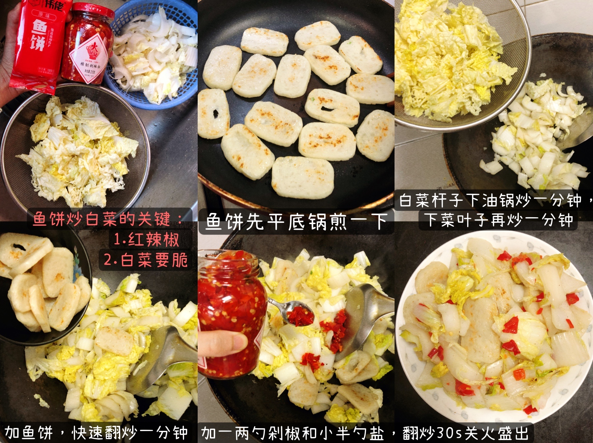
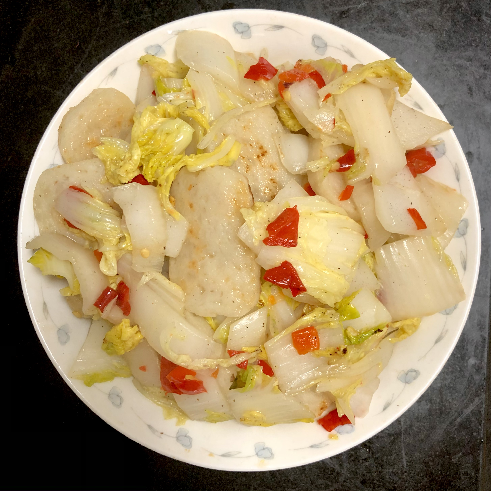
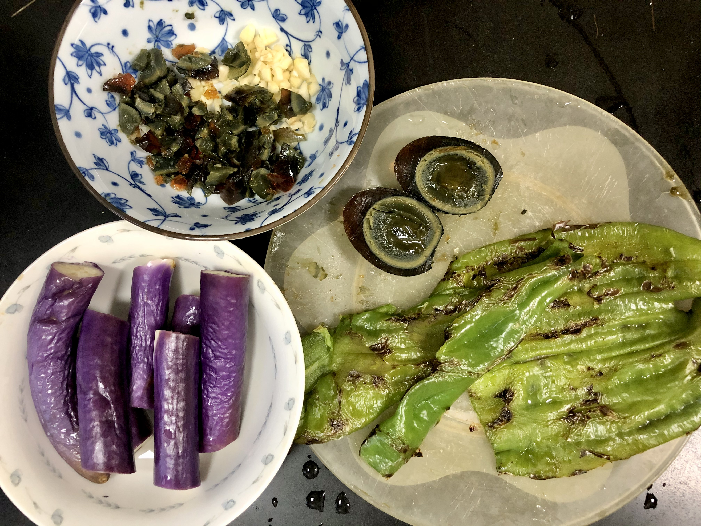
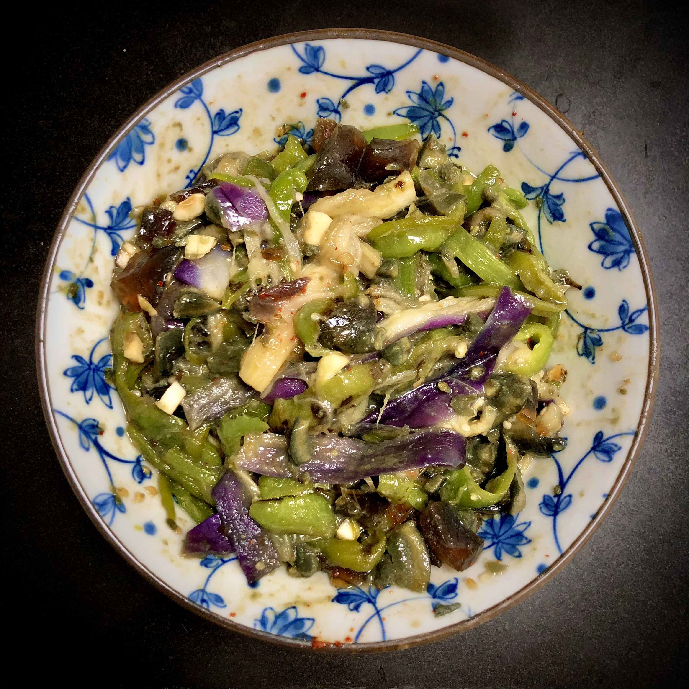

1 Fried Fishcake with Chinese Cabbage
Stir-fried Chinese cabbage goes ideally with many different ingredients and can have a wide range of flavors, from saline to sour and spicy. For Chinese, it is as common as salad on an American table. Fishcake is made from ground fish meat and starch, which is usually in the shape of a cylinder or cuboid, and you need to slice it into pieces before using it.
After I first tried the combination of these two, I fell in love with the taste that cabbage borrows from fishcake as well as the crispy and juicy texture that it remains. And you won't believe how easy-to-make it is!
 2 Smashed Green Pepper Mixed with Thousand-Year Black Egg
First of all, don't be scared by the look of it! You may not be familiar with the creepy name, thousand-year black egg (a.k.a. century egg), which is a kind of preserved duck eggs with oozy greenish-black yolk and semi-transparent darkened egg white. Although it may not be accepted by many of Western people, lots of Chinese are spellbound by its special salty taste. People in China usually put it in cold appetizers or eat it with porridge (a very famous dish for breakfast is porridge with pork and century egg).
The dish made of thousand-year black egg that I would like to introduce here originates from Hunan Province in middle part of China. It has a spicy taste and goes well with rice. Give it a try and you may find yourself addicted to it!
 